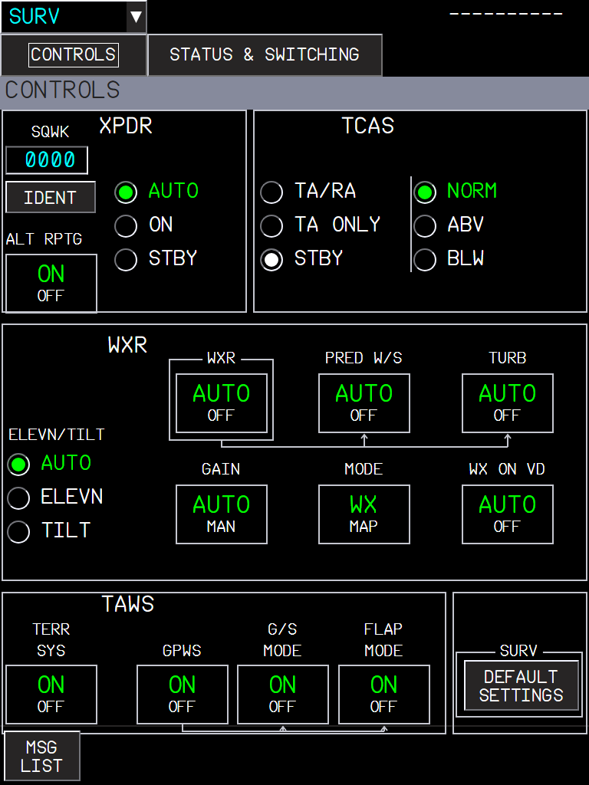
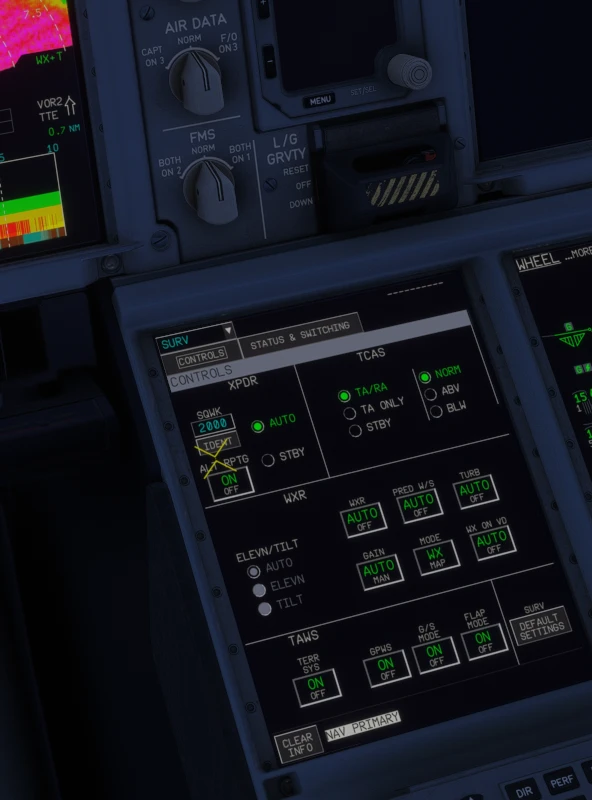
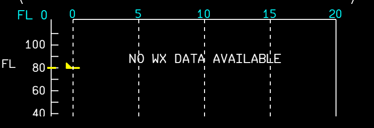
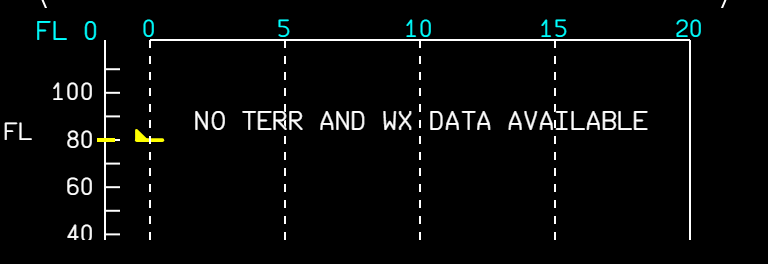

The A380 has no separate radar, TCAS or TAWS control panels: they are on the MFD SURV pages and the pedestal SURV panel (FCOM DSC-34-20-60-50). In FBW the weather radar block of the page was a stub (every button greyed), STATUS & SWITCHING did not reflect failures, and no button of the pedestal panel worked. Now they do, and the page and the panel stay in step.

| WXR button | Effect |
|---|---|
| WXR AUTO / OFF | Weather radar on or off (the ND radar picture). |
| PRED W/S AUTO / OFF | Predictive windshear (written for the systems; MSFS has no predictive windshear). |
| TURB AUTO / OFF | Turbulence detection (magenta on the ND, see the radar manuals). |
| GAIN AUTO / MAN | Radar gain (written; MSFS has no gain). |
| MODE WX / MAP | Weather or ground mapping. |
| WX ON VD AUTO / OFF | Weather on the vertical display. |
| ELEVN / TILT | AUTO, or a manual elevation or tilt. |
The WXR buttons are inhibited only when the selected WXR system has really failed.

The panel buttons never worked: their light template runs the button code only when the panel is powered, and the pedestal never told it so. They are powered from DC 1 now and linked to the MFD pages:
| Panel button | Does | Same as |
|---|---|---|
| WXR TAWS SYS 1 / SYS 2 | Selects the WXR / TAWS system | STATUS & SWITCHING, top |
| XPDR TCAS SYS 1 / SYS 2 | Selects the transponder system | STATUS & SWITCHING, bottom |
| G/S MODE | Glide slope mode of the GPWS on / off | SURV CONTROLS, TAWS |
| TCAS ABV / BLW / TA ONLY | TCAS display and mode | SURV CONTROLS, TCAS |
Each button lights from the same value the page uses, so pressing one on the pedestal changes the page, and the reverse.
The VD message was always "NO TERR AND WX DATA AVAILABLE" when TERR SYS was off. Now:
| Situation | VD message |
|---|---|
| TERR SYS OFF only | NO TERR DATA AVAILABLE |
| WXR failed or OFF, or WX ON VD OFF | NO WX DATA AVAILABLE |
| Both | NO TERR AND WX DATA AVAILABLE |


| Limitation | Why | What to do |
|---|---|---|
| PRED W/S and GAIN MAN do nothing visible. | The MSFS radar has no predictive windshear and no gain; the values are written for when it does. | - |
| One MSFS radar for both systems. | SYS 1 / SYS 2 select the failure state and the lights; the picture comes from the same sim radar. | - |